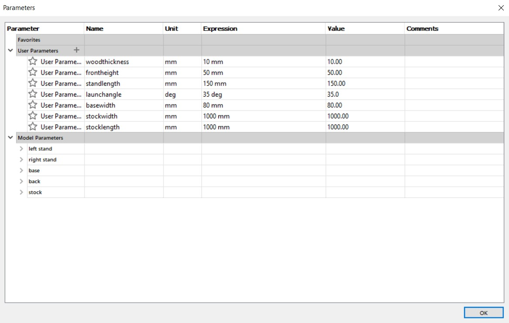

2D CNC
Example stool
In order to familiarise myself with the workflow of designing milled products, i followed this video guide from autodesk on youtube.
Firstly, i created a sketch on the xy plane and drew a center-diameter circle with radius pointed at the variable "seat_diam".
I then made a new component and sketch, which has a parametric height variable defined by the variable "height". After that, i extruded the whole profile by the variable "wood_thickness". This allows me to easily change the design to fit any wood thickness available in the fablab at the time.
I duplicated the leg component and rotated it 90 degrees in the z-axis.
Instead of doing a combine-cut operation, the video manually sketched out the + shaped hole on the seat such that clearance can be easily changed should the machine need it. So that was what i did.
This is the completed result!

However, I needed to extract the dxf of each of the individual components, so I had to lay the pieces flat on the xy axis. Doing this also gives me a good idea of how much stock will be needed for milling.
After sanding off the edges, I assembled the pieces to end up with this stool.

Drone launch pad
After browsing on the internet, i found this drone launch stand that could be interesting to try out.
So, i decided that it would be interesting to make one using the 2D CNC as part of my topic assignment.
Firstly, i drew a simple sketch of the side profile. The small bump in the lower part of the slope is to prevent the drone from sliding off.
I also made this part parametric since the launch angle of the drone can vary according to different pilots.

After a simple extrude using the variable "woodthickness",
By using the move tool, I duplicated the component and moved it an arbituary amount to the right.
In order for the stand to clear the battery and the motors, I did a quick measurement of the arms. 80mm distance seems to be a good width for the stand.
After sketching the base dimensions,
After moving the 2 components the appropiate distance with each other.
Using the sketch tool, I drew a slot on the base plate and mirrored it longitudinally.
After a simple extrude operation,
Using the base plate as a tool, i cut the side plates to transfer the slots.
In order to get an idea of how much stock i will need, how the parts will be arranged, and to extract the dxf files from the model, i laid the pieces flat against the stock.
However, due to a directory issue, I was not able to make the dogbones in fusion360.
After consulting my teacher, i was able to redo the dogbones properly by making a new sketch, projecting the existing geometry, and extruding the profile. This is the result.